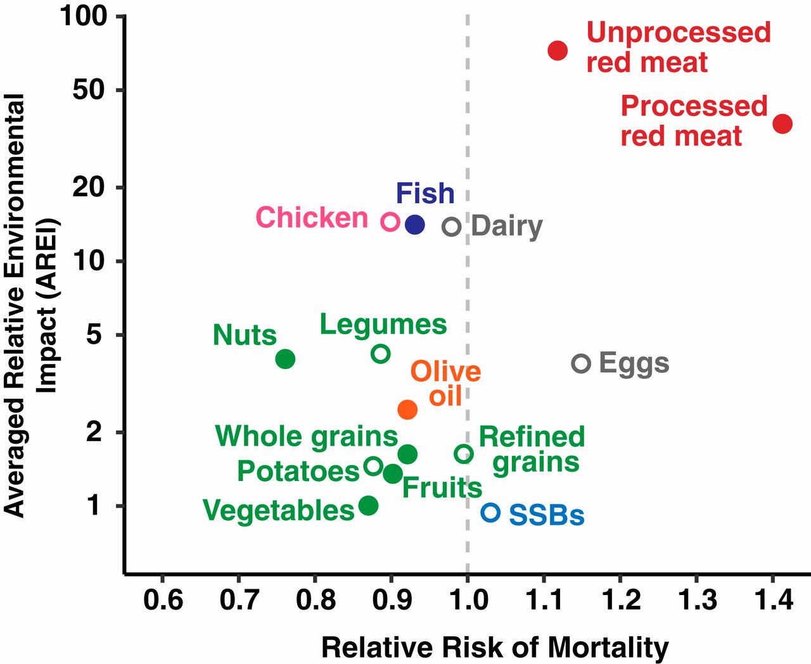

Draft only · noindex,nofollow · PL/EN · P1/P2 remediated
Przekąski przy pracy biurowej
Lead PL: Przekąski przy pracy biurowej: przekąski przy biurku, które domykają głód zamiast rozpoczynać całodniowe skubanie. Ten szkic ma pomóc czytelnikowi podjąć kilka małych decyzji w zwykłym tygodniu, bez obietnic leczenia, bez straszenia i bez planu, którego nie da się utrzymać przy pracy, rodzinie albo podróży.

Najważniejsze wnioski
- Najpierw nazwij sytuację: przekąski, które stabilizują energię zamiast nakręcać całodzienne podjadanie.
- Pierwszy krok to: zdecyduj, czy przekąska ma dodać białko, błonnik czy przerwę od ekranu, zamiast jeść z otwartej paczki.
- W praktyce oprzyj posiłki o: jogurt z owocem, kanapka mini, garść orzechów w pojemniku, warzywa z hummusem, twarożek, owoc i ser.
- Nie idź w skrót: największa pułapka to przekąska bez końca, leżąca cały dzień obok klawiatury.
Najważniejsza zasada
Przekąski przy pracy biurowej dotyczy przede wszystkim sytuacji: przekąski, które stabilizują energię zamiast nakręcać całodzienne podjadanie. Najlepszy punkt wyjścia to zwykły tydzień, w którym da się powtórzyć podobne posiłki i zauważyć, co naprawdę pomaga. Artykuł nie ustawia jednej idealnej diety; porządkuje decyzje, które mają największą szansę być wykonane.
Mały eksperyment
Pierwszy krok: zdecyduj, czy przekąska ma dodać białko, błonnik czy przerwę od ekranu, zamiast jeść z otwartej paczki. Dzięki temu zmiana jest mierzalna i nie zamienia się w chaotyczne usuwanie produktów. Jeśli po kilku dniach nie da się jej utrzymać, warto uprościć warunki, a nie dokładać kolejne zakazy.
Baza posiłku
W praktyce przydadzą się: jogurt z owocem, kanapka mini, garść orzechów w pojemniku, warzywa z hummusem, twarożek, owoc i ser. Taki zestaw daje punkt zaczepienia w sklepie i w kuchni. Nie każdy element musi pojawić się codziennie; ważniejsze jest, żeby posiłek miał funkcję: sycić, ułatwiać regularność albo zmniejszać liczbę przypadkowych decyzji.
Polski sklep i kuchnia
Przy zakupach warto wybrać dwie wersje: domową i awaryjną. Domowa może być tańsza i bardziej powtarzalna, awaryjna ma ratować dzień, kiedy plan się rozsypuje. Wtedy czytelnik nie musi wybierać między perfekcją a całkowitym porzuceniem nawyku.
Czego nie obiecywać
Najważniejsza pułapka: największa pułapka to przekąska bez końca, leżąca cały dzień obok klawiatury. To szczególnie istotne w treściach zdrowotnych, bo radykalna rada często brzmi atrakcyjnie, ale nie daje lepszego monitorowania objawów ani jakości diety. Lepiej zmienić jeden element i wiedzieć, co się sprawdza.
Jak ocenić efekt
przygotuj dwie porcje z wyprzedzeniem i jedz je poza głównym ekranem, choćby przez pięć minut. Do obserwacji wystarczą trzy sygnały: głód lub sytość, komfort trawienia oraz łatwość powtórzenia planu. Wyniki badań, masa ciała czy objawy przewlekłe wymagają dłuższego horyzontu niż jeden weekend.
Bezpieczeństwo
senność, napady głodu lub duże wahania energii mogą wymagać sprawdzenia składu głównych posiłków i zdrowia metabolicznego. Ten tekst jest edukacyjny i nie zastępuje diagnozy, leczenia ani indywidualnej konsultacji z lekarzem lub dietetykiem.
FAQ
Od czego zacząć przy temacie: przekąski przy pracy biurowej?
Zacznij od najprostszej obserwacji: zdecyduj, czy przekąska ma dodać białko, błonnik czy przerwę od ekranu, zamiast jeść z otwartej paczki. Jedna zmiana daje lepszą informację niż pięć działań wprowadzonych jednocześnie.
Czy potrzebuję specjalnych produktów?
Zwykle nie. Najpierw wykorzystaj proste opcje: jogurt z owocem, kanapka mini, garść orzechów w pojemniku, warzywa z hummusem, twarożek, owoc i ser. Produkty specjalistyczne mają sens dopiero wtedy, gdy rozwiązują konkretny problem, a nie tylko wyglądają zdrowiej.
Kiedy dieta nie wystarczy?
senność, napady głodu lub duże wahania energii mogą wymagać sprawdzenia składu głównych posiłków i zdrowia metabolicznego. W takich sytuacjach dieta może być wsparciem, ale nie powinna opóźniać diagnostyki ani leczenia.
Nota bezpieczeństwa
Artykuł ma charakter edukacyjny i nie zastępuje diagnozy, leczenia ani indywidualnej konsultacji medycznej lub dietetycznej. senność, napady głodu lub duże wahania energii mogą wymagać sprawdzenia składu głównych posiłków i zdrowia metabolicznego
Office-work snacks
Lead EN: Office-work snacks: desk snacks that close a hunger gap instead of starting all-day grazing. This draft helps the reader make a few small decisions in an ordinary week, without treatment promises, scare tactics or a plan that collapses around work, family or travel.
Key takeaways
- Start by naming the situation: przekąski, które stabilizują energię zamiast nakręcać całodzienne podjadanie.
- The first step is to decide whether the snack should add protein, fibre or a screen break instead of eating from an open pack.
- In practice, build around: yoghurt with fruit, a mini sandwich, a portioned handful of nuts, vegetables with hummus, cottage cheese, fruit and cheese.
- Avoid the shortcut that the biggest trap is an endless snack sitting next to the keyboard all day.
The key principle
Office-work snacks is mainly about this situation: przekąski, które stabilizują energię zamiast nakręcać całodzienne podjadanie. The best starting point is an ordinary week in which similar meals can be repeated and patterns can be noticed. The article does not prescribe one perfect diet; it organises the decisions most likely to be carried out.
A small experiment
The first step is to decide whether the snack should add protein, fibre or a screen break instead of eating from an open pack. This makes the change measurable and prevents chaotic food removal. If it cannot be maintained after a few days, simplify the conditions rather than adding more rules.
Meal base
Practical options include: yoghurt with fruit, a mini sandwich, a portioned handful of nuts, vegetables with hummus, cottage cheese, fruit and cheese. This gives the reader a shopping and cooking anchor. Not every element must appear daily; what matters is the job of the meal: fullness, rhythm or fewer random decisions.
Polish shop and kitchen
For shopping, it helps to choose two versions: a home version and a backup version. The home version can be cheaper and more repeatable; the backup version saves the day when the plan falls apart. This avoids an all-or-nothing choice between perfection and abandoning the habit.
What not to promise
The key trap is that the biggest trap is an endless snack sitting next to the keyboard all day. This matters in health content because radical advice often sounds attractive but does not improve symptom tracking or diet quality. Changing one element gives clearer feedback.
How to judge the effect
prepare two portions in advance and eat them away from the main screen, even for five minutes. Three signals are enough to monitor: hunger or fullness, digestive comfort and whether the plan can be repeated. Lab results, body weight and chronic symptoms need a longer horizon than one weekend.
Safety
sleepiness, intense hunger or large energy swings may require checking main meals and metabolic health. This article is educational and does not replace diagnosis, treatment or an individual consultation with a doctor or dietitian.
FAQ
Where should I start with przekąski przy pracy biurowej?
Start with the simplest observation: decide whether the snack should add protein, fibre or a screen break instead of eating from an open pack. One change gives clearer feedback than five actions introduced at the same time.
Do I need special products?
Usually not. Start with simple options: yoghurt with fruit, a mini sandwich, a portioned handful of nuts, vegetables with hummus, cottage cheese, fruit and cheese. Specialist products make sense only when they solve a specific problem, not just because they look healthier.
When is diet not enough?
sleepiness, intense hunger or large energy swings may require checking main meals and metabolic health. In such situations, diet can support care but should not delay diagnosis or treatment.
Safety note
This article is educational and does not replace diagnosis, treatment or individual medical or nutrition advice. sleepiness, intense hunger or large energy swings may require checking main meals and metabolic health